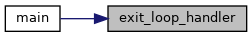

#include <signal.h>#include <stdlib.h>#include <iostream>#include <algorithm>#include <fstream>#include <chrono>#include <ctime>#include <sstream>#include <iomanip>#include <condition_variable>#include <opencv2/core/core.hpp>#include <opencv2/highgui.hpp>#include "opencv2/imgproc/imgproc.hpp"#include <librealsense2/rs.hpp>#include "librealsense2/rsutil.h"
Include dependency graph for recorder_realsense_T265.cc:
Go to the source code of this file.
Functions | |
| void | exit_loop_handler (int s) |
| static rs2_option | get_sensor_option (const rs2::sensor &sensor) |
| int | main (int argc, char **argv) |
Variables | |
| bool | b_continue_session |
| const float | reductionFactor = 0.5 |
| const int | colsRedIm = reductionFactor * 848 |
| const int | rowsRedIm = reductionFactor * 800 |
Function Documentation
◆ exit_loop_handler()
| void exit_loop_handler | ( | int | s | ) |
Definition at line 47 of file recorder_realsense_T265.cc.
References b_continue_session.
Referenced by main().
Here is the caller graph for this function:

◆ get_sensor_option()
|
static |
Definition at line 52 of file recorder_realsense_T265.cc.
◆ main()
Definition at line 94 of file recorder_realsense_T265.cc.
149 imCV_left = cv::Mat(cv::Size(width_img, height_img), CV_8U, (void*)(color_frame_left.get_data()), cv::Mat::AUTO_STEP);
150 imCV_right = cv::Mat(cv::Size(width_img, height_img), CV_8U, (void*)(color_frame_right.get_data()), cv::Mat::AUTO_STEP);
180 rs2_intrinsics intrinsics_cam = cam_stream_left.as<rs2::video_stream_profile>().get_intrinsics();
270 accFile << std::setprecision(15) << vAccel_times[i] << "," << vAccel[i].x << "," << vAccel[i].y << "," << vAccel[i].z << endl;
References b_continue_session, colsRedIm, _setup_util::e, exit_loop_handler(), reductionFactor, and rowsRedIm.
Here is the call graph for this function:

Variable Documentation
◆ b_continue_session
| bool b_continue_session |
Definition at line 40 of file recorder_realsense_T265.cc.
Referenced by exit_loop_handler(), and main().
◆ colsRedIm
| const int colsRedIm = reductionFactor * 848 |
Definition at line 43 of file recorder_realsense_T265.cc.
Referenced by main().
◆ reductionFactor
| const float reductionFactor = 0.5 |
Definition at line 42 of file recorder_realsense_T265.cc.
Referenced by main().
◆ rowsRedIm
| const int rowsRedIm = reductionFactor * 800 |
Definition at line 44 of file recorder_realsense_T265.cc.
Referenced by main().